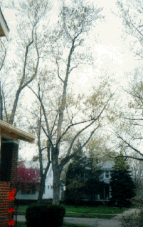
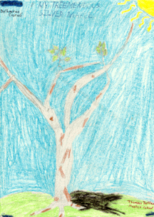

Student Project
Lauren


My tree is fat and it has chunky bark. It is a gray-brown color with a few leaves. It is a shady and big tree. It has alot of branches and twigs. My tree was planted in the early twenties. It might be cut down because its roots are blocking the sewer. I feel sort of proud standing next to my tree because I know there is still something to give me oxygen and shade.
My tree is located in my front yard next to the sidewalk. It is six feet wide and approximately eighty feet tall. My tree is about seventy years old.
-Lauren
c.Lauren
Grade 4
Thomas Jefferson Magnet School
Euclid, Ohio USA
"My Treemendous Silver Maple"
pencil, crayons, and pen on paper 9"X12"
Silver Maple
Latin Name: TBA
Age: 70 years old
Circumference at 54 inches from the base: TBA
Location: Euclid, Ohio USA
 Return to Main Page
Return to Main Page
June Julian jj68@nyu.edu